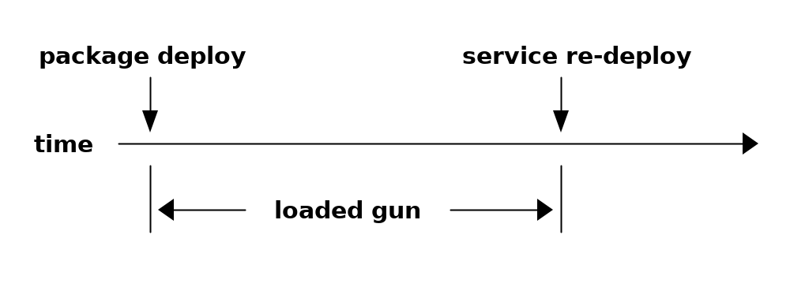
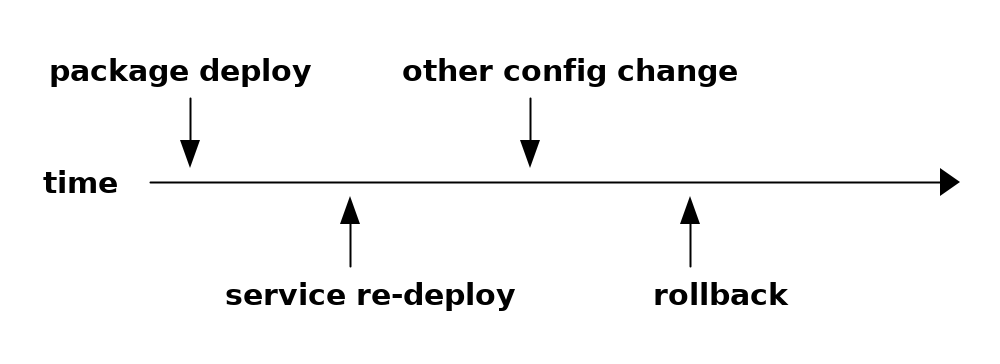
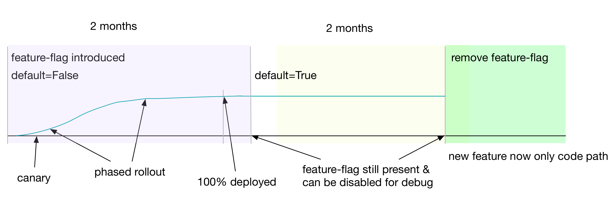

-> new config is now active in network
<config-template xmlns="http://tail-f.com/ns/config/1.0"> <devices xmlns="http://tail-f.com/ns/ncs"> <device tags="nocreate"> <name>{/device}</name> <config tags="merge"> <interface-configurations xmlns="http://cisco.com/ns/yang/Cisco-IOS-XR-ifmgr-cfg"> <interface-configuration> <active>act</active> <interface-name>{/interface}</interface-name> <description>Link to {/remote/device} [{/remote/interface}]</description> <mtus> <mtu> <owner>{$INTERFACE_TYPE}</owner> <!-- new hard-coded MTU --> <mtu>9100</mtu> </mtu> </mtus> <shutdown tags="delete" when="{/shutdown='false'}"/> <!-- ... other config stuff ... --> </interface-configuration> </interface-configurations> </config> </device> </devices> </config-template>

commit dry-run
list backbone-interface { key "device interface"; // other things container feature-flags { leaf high-mtu { type boolean; description "Enable new high MTU (9100). Disable for old MTU (1500)"; default "false"; } } }
<config-template xmlns="http://tail-f.com/ns/config/1.0"> <devices xmlns="http://tail-f.com/ns/ncs"> <device tags="nocreate"> <name>{/device}</name> <config tags="merge"> <interface-configurations xmlns="http://cisco.com/ns/yang/Cisco-IOS-XR-ifmgr-cfg"> <interface-configuration> <active>act</active> <interface-name>{/interface}</interface-name> <description>Link to {/remote/device} [{/remote/interface}]</description> <mtus> <mtu> <owner>{$INTERFACE_TYPE}</owner> <!-- new high MTU conditioned on feature-flags --> <mtu when="/feature-flags/high-mtu='true'">9100</mtu> </mtu> </mtus> <shutdown tags="delete" when="{/shutdown='false'}"/> <!-- ... other config stuff ... --> </interface-configuration> </interface-configurations> </config> </device> </devices> </config-template>

list backbone-interface { key "device interface"; // other things leaf mtu { type uint16 { range "1500..9100"; } description "MTU of service"; default "1500"; } }
list backbone-interface { key "device interface"; // other things leaf mtu { type uint16 { range "1500 | 9100"; } description "MTU of service, either 1500 (old) or 9100 (new)"; default "1500"; } }
typedef ff-boolean-false-to-true { type boolean; description "A boolean feature flag that transitions from false to true"; default false; }
show feature-flags feature-flags | feature-flag | type | progress | |------------------------------------------------------+---------------+----------| | /infrastructure/base-config/feature-flags/foobar | false-to-true | 73% | | /infrastructure/backbone-interface/feature-flags/bar | false-to-true | 14% | show feature-flags instances | instance | type | value | complete | |------------------------------------------------------------------+---------------+-------+----------| | /infrastructure/base-config{901-R1-2053}/feature-flags/foobar | false-to-true | false | false | | /infrastructure/base-config{901-R1-2054}/feature-flags/foobar | false-to-true | true | true | | /infrastructure/bb-intf{901-R1-2053 et-9/0/0}/feature-flags/bar | true-to-false | false | true | | /infrastructure/bb-intf{901-R1-2053 et-10/0/0}/feature-flags/bar | true-to-false | true | false |
action self-test { tailf:info "Perform self-test of the service"; tailf:actionpoint "backbone-interface-self-test"; output { leaf success { type boolean; } container interface { // service specific health / state about the interface } container is-is { // service specific health / state about IS-IS } container pim { // service specific health / state about PIM } } }
action self-test { tailf:info "Perform self-test of the service"; tailf:actionpoint "ibgp-neighbor-self-test"; output { leaf success { type boolean; } container bgp { // BGP specific health / state } } }
def get_state(kp_unused, log, root=None, service=None, action_output=None): log.info("get_state for {} {}".format(service.device, service.interface)) dev = root.devices.device[service.device] os = utils.get_dev_os(dev) state = service.state